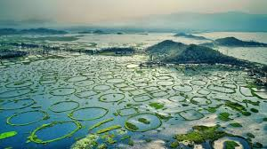
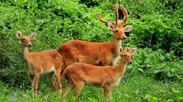
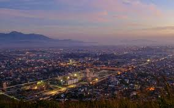
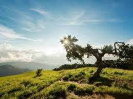
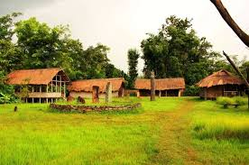

Loktak Lake

The largest freshwater lake in Northeast India, famous for its floating phumdis (heterogeneous mass of vegetation, soil, and organic matter) and home to the Keibul Lamjao National Park, the world's only floating national park.
Keibul Lamjao National Park

Located on Loktak Lake, this park is the last natural habitat of the endangered Manipur brow-antlered deer, or Sangai, the state animal.
Imphal

The state capital, featuring historical landmarks like the Kangla Fort, the Ima Keithel (Mother's Market - run entirely by women), and World War II cemeteries.
Shirui Kashong Peak

Known for the unique and rare Shirui Lily (Lilium mackliniae), a flower that is endemic to this region and blooms on the peak during the monsoon season.
Andro

A small traditional village known for its cultural complex, which showcases the traditions, artifacts, and pottery of Manipur's different tribes.